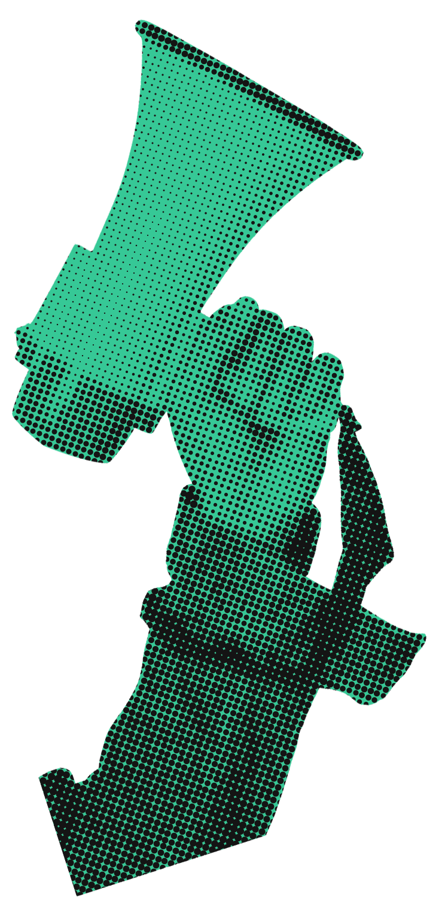
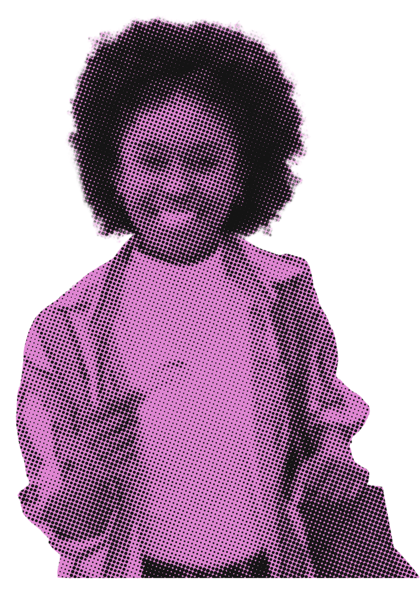
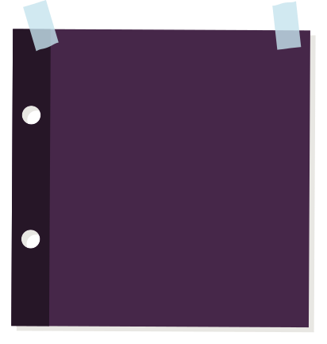

YOUNG VOTERS
SHAPE ELECTIONS
Learn More



WHY THEY MATTER?
Young voices are an important part of our democracy, but understanding the voting process is the first step toward making informed decisions. Explore the facts, discover the trends behind youth voter participation, and learn how every election shapes our communities.
GROWING INTEREST
50% of people ages 18-29 voted in 2020
There has been a significant rise in youth participation compared to previous elections. This surge reflects a growing interest among young adults in shaping the political landscape and addressing issues that impact their future.
SEE HOW YOUNG VOICES ARE MAKING A CHANGE
The impact of youth participation
-
50M+
Individuals under the age of 40 are eligible to cast ballots. Young people now make up the largest segment of eligible voters.
-
61%
Of young voters supported the Democratic candidate in 2020, making them crucial in determining the balance of political power.
-
8 Million +
Young people aged 18-24 registered to vote, setting a new benchmark for pre-election engagement.
-

in 2020
Young voters were decisive in battleground states where the margin of victory was fewer than 50,000 votes in each state.
DIVERSITY IN THE YOUTH
Everyones vote counts, but not everyone gets the information to cast one
Young voters are one of the most diverse groups in the electorate, but turnout isn't equal: in 2024, 55% of white youth voted compared to 32% of Latino youth. Researchers link these gaps to unequal access to voting information and opportunities, so making that information easy to find helps more young people take part.
Learn More
Fill the form to learn more about how to vote for upcoming elections